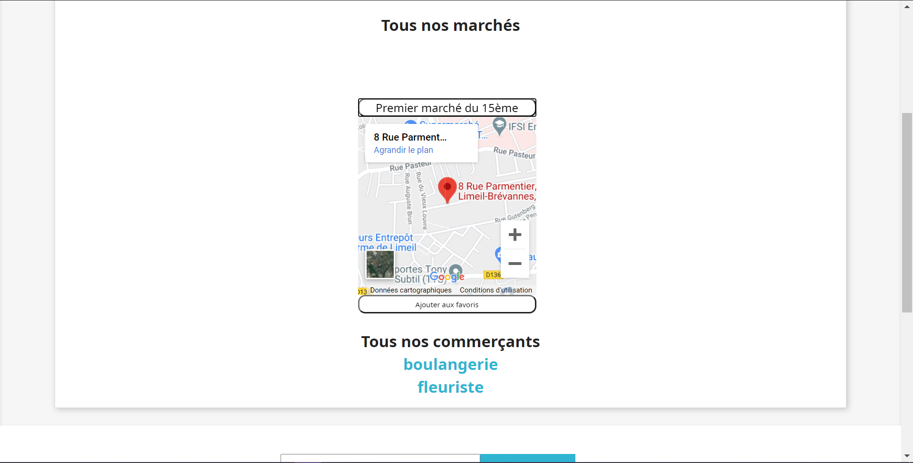

Code camp
Ici je vais vous présenter mon code camp.
Ce projet est mon premier pas dans le monde du travail.
Il était basé sur une intéraction avec une réelle entreprise qui incluera le projet sur son site web s'il convient à ses attentes.
Dans ce projet j'ai dû créer un dossier, un pluggin qui allait pouvoir être injecté donc plugable à un site web déja existant.
Les attentes de l'entreprise était les suivantes : un pluggin qui permettrai aux utilisateurs de pouvoir trouver un point de vente précis dans Paris grace à une géolocalisation de différents lieux.
Visuel
Le coté visuel de ce projet m'a paru clair
J'ai décidé de faire quelque chose de très sobre et simple d'utilisation, pensant que ça collerait plus à l'entreprise.
De ce fait j'ai aussi repris les couleurs du site web de base ainsi que la police d'écriture.
Technique
Ici aussi le pluggin est principalement à base de fonctions javascript.
Ce fut pour ma part l'un des projet les plus dur à coder car la création des fonctions devait suivre les conditions de l'entreprise.
J'ai commencer par chercher comment fonctionnait les apis et s'il était possible d'ajouter une carte à une page web.
Une fois ceci fait et grâce à l'expérience de mes précedents projets je savais déja comment récuperer les points de vente ainsi que les différent commerçants mais je savais seulement le faire en php.
J'ai donc aussi pu apprendre à lier php et Javascript afin d'attendre mes fins.

Avis du client
Après un début que j'ai trouver concluant et une discussion avec le client, il m'a proposer de nouvelles idées sur lesquelles je me suis adapté.
j'ai donc modifié certaines parties de mon code de façon à ce qu'il convienne au client, ce qui lui a particulièrement plus m'ayant honoré à l'oral accompagné d'un : "Prise en compte des retours du client avec l'ajout de favoris."